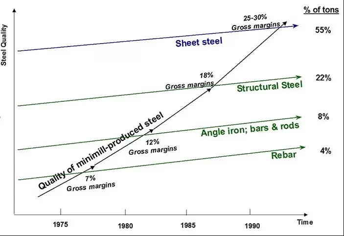

Single-Vendor Risk, Microsoft's Latest Brand Reshuffle, the Founder Exodus — and Why You Should Stop Asking AI to Make Better Slides
AI Brief, Curated
Editor's Take
Three threads worth pulling on this week. First: Claude Opus 4.7's hallucination concerns are not getting better with time, and the lesson runs deeper than one model release. The dominant story in enterprise AI strategy is still "pick a vendor and go." But what most teams are not pricing in is the supply-chain risk that comes with single-point-of-sourcing your model layer. When the vendor regresses, your workflow regresses. Diversification matters in AI for the same reason it matters in semiconductor procurement and component sourcing — and it is not yet table stakes.
Second: Microsoft launched Agent 365, which is genuinely useful — and also the third or fourth time in twelve months that Microsoft has rebranded its enterprise AI surface. Cortana → Copilot → Copilot Cowork → Copilot Skills → Agent 365, give or take a layer. At some point this stops being product marketing and starts being a tax on enterprise procurement teams trying to buy the right thing. Microsoft being Microsoft. Capability remains real; the brand chaos is real too.
Third: senior staff are leaving Meta, Google, and OpenAI to start AI companies in numbers that even seasoned investors describe as the founding pattern of the decade. The interesting thing is not that talented people are starting companies — they always have. The interesting thing is that the playbook for starting an AI company in 2026 is fundamentally different than the playbook five years ago. Different capital structures, different model maturity, different go-to-market motion. Whether this wave produces durable companies or a graveyard of half-finished demos is genuinely unpredictable from where we sit. The Org section today picks up the same theme from a different angle: most organizations are still asking AI to make better slides when they should be asking which artifacts AI just made obsolete.
This Week's Top Stories
Opus 4.7 Hallucinations Persist — and Why Single-Vendor AI Strategy Is a Supply-Chain Problem
User reports / Anthropic / WriterIndustry
Two weeks after Opus 4.7's release, the regression reports keep coming. Multiple developer forums, enterprise users, and reviewers continue to flag that 4.7 hallucinates more frequently than 4.6 on factual recall, occasionally produces less reliable code in long sessions, and has introduced new failure modes in workflows that worked smoothly under the prior model. Anthropic has not formally acknowledged a regression, and the official benchmarks still show 4.7 ahead. The disconnect between benchmark and practice is itself the lesson — and a familiar one.
The deeper lesson is structural, not about Anthropic specifically. Most enterprises have built their AI roadmaps around a single primary model vendor. When that vendor ships a model regression — or a price change, a rate-limit cut, a policy shift, a security incident, an outage — the organization absorbs it. This is exactly the supply-chain risk that procurement teams have been managing in semiconductors, components, and SaaS for decades. AI is not yet treated the same way, and it should be. The organizations doing this well are routing critical workloads across at least two model families (typically Anthropic + OpenAI, or Anthropic + Gemini), with abstraction layers that let them swap providers without re-engineering downstream systems.
Worth noting in this context: Writer, whose enterprise app I covered last week, is one of the few enterprise AI vendors that runs its own proprietary LLM family rather than wrapping OpenAI or Anthropic. From a supply-chain standpoint, that matters — Writer's roadmap and reliability are not contingent on whether GPT-6 ships on schedule or whether Opus 4.8 fixes a regression. For governance and risk teams running an AI buyer's checklist, "is this vendor an OpenAI/Anthropic wrapper, or do they own their model?" is a question worth asking out loud. It is not a deal-breaker — many wrappers add genuine value above the model layer — but it changes how you think about diversification in your AI portfolio.
Microsoft Agent 365 Launches — Real Capability, Plus Microsoft's Trademark Brand Whiplash
Microsoft / VentureBeatIndustry
Microsoft launched Agent 365 this week — a control plane for governing, observing, and securing the AI agent sprawl that enterprises are now living with. The product extends Entra ID, Defender, Purview, and Intune to AI agents and the apps they touch. Identity for agents. Audit logs for agents. Conditional access for agents. DLP for agents. This is genuinely useful: the "12 agents per company, 50% siloed" stat we covered in Issue #6 is exactly the problem Agent 365 is designed to address, and Microsoft is one of very few vendors with the enterprise install base and identity layer to credibly do it.
It is also, give or take a quarter, the third or fourth time in twelve months that Microsoft has reshuffled its enterprise AI brand. We have had Copilot, then Microsoft 365 Copilot, then Copilot Studio, then Copilot Cowork, then Copilot Skills, and now Agent 365 — which sits alongside Copilot but is also somehow part of the Microsoft 365 family but is not the same as Microsoft 365 Copilot. There is a Venn diagram somewhere inside Redmond that explains how all of these fit together. There is also an entire generation of enterprise procurement directors who would prefer to be told, just once, what they are buying. Microsoft being Microsoft. The capability is real, the rebranding is real, and so is the cumulative confusion tax it puts on every CIO making a buy decision in this space.
The Founder Exodus: Senior AI Staff Leaving Meta, Google, OpenAI to Start Their Own — and Why the Playbook Is Different This Time
CNBC / Bloomberg / The InformationIndustry
CNBC reported on April 28 that senior researchers and engineers are leaving Meta, Google, and OpenAI in numbers that investors describe as the founding pattern of the decade. The exodus is not about disgruntlement. It's about a specific market window: frontier-model capability has reached a level where small teams with the right model access can build products that would have required hundreds of engineers a few years ago, and the capital is available to fund them generously. Mira Murati's Thinking Machines (founded 2024 from OpenAI), Ilya Sutskever's Safe Superintelligence Inc., Jeff Bezos's stealth AI lab, the Cursor and Cognition founding teams, and dozens of less-publicized starts have all followed the pattern.
What makes this wave genuinely hard to forecast is that the playbook is fundamentally different than the 2020 generation. Five years ago, founding an AI company meant assembling a research team, raising compute, and spending eighteen months training your own model before you had anything to show. Today, founders raise hundreds of millions of dollars on the strength of a strong team and a credible thesis, route their workloads through frontier APIs, and ship product in weeks. Capital structures look different — Anthropic's $40B Google round and Cursor's $50B valuation suggest the venture-economics top end has expanded, but the failure rate at the bottom may also be higher because the model commoditization makes durable moats harder to build. Whether this generation produces a durable cohort of major companies — the way 2007–2010 produced Stripe, Airbnb, Uber, and Slack — or a graveyard of well-funded demos that lost their differentiation when GPT-6 shipped, is genuinely uncertain. We will know in three to five years. From where we sit today, the pattern is real, the capital is real, and the outcomes are unforeseeable in a way that the 2020 cohort was not.
The plug-and-play trap, and what it tells us about where AI adoption actually fails.
Heads-up: ~2,200 words, roughly an 8-minute read. Continues a thread we started in Issue #5 (the electricity / process-rebuild argument).
Disclaimer: All opinions in this essay are my own. They do not represent the company's position. This is meant as an academic discussion of organizational change.
There is a particular conversation I keep having with executives across industries. Someone shows me an AI-generated slide deck — well-formatted, clean, professional. They tell me how much faster it was to produce. They ask how to make the next one even better. The slides are not bad. The time saved is real. And yet the entire exercise is missing the point.
Slides exist because of a constraint nobody questions anymore. They were the artifact of a pre-AI era — a way to compress information into a portable, projectable, linear format that one human could narrate to a roomful of others. Every choice in slide design is downstream of that constraint. Bullet points exist because the audience cannot read paragraphs at projection speed. Static charts exist because you cannot interact with a slide. The five-bullet rule, the picture-superiority effect, the no-more-than-six-rows-of-table heuristic — all of it is engineering around the limitations of a medium that was the best we had in 1995.
AI does not just make slides faster. AI makes slides obsolete for most of the things we currently use them for. With the same effort it now takes to ask a model to "make me a deck on Q3 performance," you can ask it to build an interactive HTML dashboard where the audience explores the data themselves, drills into the segments that interest them, and walks away with answers to questions you would not have thought to address in a static deck. The dashboard is not a slightly better slide. It is a different artifact, made possible by a capability that did not exist when the slide-based workflow was designed.
Most AI adoption is currently asking the wrong question. The question is not "how do I do my existing work faster with AI." It is "which of my existing artifacts, processes, and workflows were shaped by constraints that AI has now removed — and what should replace them?"
This is the lesson the historical record keeps trying to teach us, and it is the lesson most organizations are still failing to learn.
The Electricity Pattern, Again
The factory redesign that unlocked electrification's productivity gains — moving from central-shaft layouts to unit-drive workflows took forty years.
Economist Paul David's 1990 paper "The Dynamo and the Computer" is required reading for anyone doing AI strategy. David documented why factory electrification, which arrived in the 1880s, produced almost no measurable productivity gains for nearly forty years. The reason was not that electric motors were inferior. They were superior on every relevant dimension. The reason was that factory owners installed electric motors as direct replacements for steam engines — keeping the same building layout, the same long mechanical shaft running the length of the factory, the same machine arrangements. They got electric power. They kept the steam-era workflow.
The transformative gains arrived only when factory owners realized they could put a small motor on every individual machine, eliminate the central shaft entirely, and redesign the factory itself around what electricity actually enabled. Single-story buildings replaced multi-story ones. Machines were arranged by workflow rather than by proximity to the power source. Production lines became reconfigurable. Once this happened, productivity exploded — electrification is widely credited with roughly half of U.S. manufacturing productivity growth during the 1920s.
Erik Brynjolfsson, Daniel Rock, and Chad Syverson have shown that AI exhibits the same pattern, more pronounced. Measured productivity lags in the early years of any general-purpose technology because organizations are absorbing the cost of complementary investments — new processes, new skills, new structures — that are required to actually deliver the gains. The gains are real. They just do not arrive until the operating model itself is rebuilt.
The slides example is the everyday version of this. We are using AI to make the steam-era artifact faster, when AI actually enables the unit-drive equivalent — interactive, exploratory, reconfigurable — that the old workflow could never have produced. Multiply this across every process in a typical organization, and you can see why most AI initiatives report modest productivity gains rather than the order-of-magnitude transformations the technology actually enables.
There are three things organizations need to get right to escape the slides trap. They are not specific to any industry.
1. Stop Asking How AI Improves Existing Work. Ask What Existing Work AI Makes Obsolete.
The plug-and-play layer of AI is real and worth adopting. Faster email drafting, automated meeting notes, document summarization — these tools save real time and have genuine value. Most organizations should be using them.
But the plug-and-play layer is the streetlamp version of AI. In the 1880s, the most visible application of electricity was streetlighting, which replaced the labor of lamplighters who had walked the streets each evening lighting castor-oil lamps by hand. Streetlighting was a real improvement. It was also almost beside the point. The transformative power of electricity was in what it would eventually do inside factories — and that transformation required the factory itself to be rebuilt.
The transformative layer of AI lives in the same place: not in the tools, but in the workflows the tools make possible to redesign. Client onboarding that synthesizes information without manual re-keying. Continuous monitoring that eliminates the need for periodic reviews. Decision-making processes that operate on real-time data rather than quarterly snapshots. Cross-functional coordination that happens through shared AI-maintained context rather than meetings.
The diagnostic question is simple. Look at any artifact your organization produces — a report, a deck, a memo, a dashboard, a quarterly review. Ask: was this artifact's form shaped by constraints that AI has now removed? If the answer is yes, the artifact itself is a candidate for replacement, not optimization.
2. Build the New Workflow in One Place First, Not Across the Whole Organization.
The Rogers / Moore diffusion-of-innovations curve — and the chasm between early adopters and the early majority where most technology initiatives die.
The temptation, once a leader sees the gap between the streetlamp layer and the transformative layer, is to launch a firm-wide AI initiative. This almost always fails, for reasons Geoffrey Moore documented in 1991. Moore's framework, building on Everett Rogers's diffusion of innovations theory, shows that any population contains roughly 13.5% early adopters, who tolerate rough edges to gain advantage, and a 34% early majority who only adopt when the technology is "complete" — with references, support, and predictable outcomes from peers they consider comparable. Between these two groups is a chasm. Most technology initiatives die in it.
But there is a deeper reason firm-wide initiatives fail, and it is more important than the chasm itself. Firm-wide initiatives produce compromise. Compromise erodes scope. Eroded scope dilutes impact. When an organization announces an AI strategy that applies to everyone, every constituency negotiates for accommodations. Compliance asks for additional review steps. Operations asks for integration with existing systems designed for the old workflow. Senior practitioners ask for opt-outs. Each accommodation is locally reasonable. The cumulative result is a strategy that has been adjusted, softened, and partially exempted into something that no longer represents real workflow change. The organization has technically deployed AI. The transformative gains do not arrive.
Capital One is the canonical example of doing this right. In 1988, two consultants named Richard Fairbank and Nigel Morris convinced Signet Bank to let them build a credit card division operating under what they called Information-Based Strategy — continuous experimentation, individual customer pricing, integrated cross-functional decision-making. They had pitched the same idea to roughly thirty banks. Most declined. The idea required, as Fairbank later put it, "virtually starting over, rebuilding a very different company." Signet's protected division ran thousands of small experiments, iterated weekly, and built a model that the rest of the banking industry could not replicate. In 1994, the division was spun off as Capital One. By 2025, after acquiring Discover, the combined entity served over 100 million customers.
The structural lesson is that AI-native workflows require continuous experimentation, integrated cross-functional teams, and rapid iteration that traditional operating models cannot accommodate without abandoning what makes them work today. The right move is not to retrofit existing operations. The right move is to build the new operating model in a protected segment — staffed with early adopters not just from the operating teams but from every supporting function (compliance, risk, legal, marketing, HR, operations) — designed from day one with a migration path back to the core business.
3. Pick the Segment Carefully.
The third strategic choice is where, in the organization's market or operations, the protected segment should live. The default assumption — that experimentation should happen with the most valuable customers or the highest-stakes processes — is exactly wrong. The protected segment should live where the conditions for genuine workflow rebuild are most favorable.

Rebar — the unglamorous low-margin segment Nucor used to build a fundamentally different steel production model, before climbing the ladder to displace U.S. Steel from the top.
Clayton Christensen's framework of disruptive innovation provides the criterion. Christensen's canonical example is Nucor in the steel industry. Nucor's electric arc furnace technology could initially only produce low-grade steel, so it started with rebar — the bottom of the steel quality ladder, with 7% margins, ignored by integrated producers protecting their 25–30% margins on automotive sheet steel. Over two decades, Nucor moved up through angle iron and bars, then structural steel, and finally sheet steel itself, displacing incumbents at each step.
Christensen's deeper point is often missed. The low end was not a consolation prize for Nucor. It was the only place where a fundamentally different production model could mature — long enough to get good — without competing against incumbent quality standards. Inside U.S. Steel, the same project would have been killed by finance for diluting margins and by operations for failing automotive specs. Nucor needed the protection of a segment the incumbents considered uninteresting.
Every organization has its rebar segment. For an established RIA, it is the mass-affluent client base that traditional advisor economics cannot serve profitably. For an enterprise software company, it might be the small-business tier the enterprise sales motion ignores. For a healthcare system, it might be the asynchronous-care use cases that current clinical workflows cannot accommodate. The criterion is the same in every case: a segment with distinct economics, lower defensive entrenchment, real demand, and the freedom to operate under a fundamentally different operating model.
What This Means This Week
Pick one artifact your organization produces routinely — a deck, a report, a review, a dashboard. Ask three questions about it.
First: was the form of this artifact shaped by constraints that AI has now removed? If yes, the artifact is a candidate for redesign, not optimization. Stop asking AI to make better slides. Ask whether you should be making slides at all.
Second: if you were to build the redesigned version, where in your organization could you actually build it without firm-wide compromise destroying it? That is your protected segment.
Third: what would the migration plan look like — how would the new artifact, once mature, replace the old one across the rest of the organization? Because the protected segment is not the destination. It is the training ground.
The factory owners of the 1880s did not transform manufacturing by buying better motors. They transformed it by tearing down the shaft-based factory and building something new around what electricity actually enabled. The organizations that get the most out of AI will not be the ones with the best tools. They will be the ones willing to ask which of their existing artifacts, processes, and workflows are slides — and have the patience to build the dashboards that replace them.
Erik Brynjolfsson, Daniel Rock, and Chad Syverson,"The Productivity J-Curve: How Intangibles Complement General Purpose Technologies,"American Economic Journal: Macroeconomics, Vol. 13, No. 1 (January 2021), pp. 333–372. Documents why measured productivity lags in the early years of AI adoption due to the cost of complementary intangible investments.
Warren D. Devine, Jr., "From Shafts to Wires: Historical Perspective on Electrification," Journal of Economic History, Vol. 43, No. 2 (June 1983), pp. 347–372. The detailed economic history of how the unit-drive transition reorganized U.S. manufacturing in the 1920s.
Everett M. Rogers,Diffusion of Innovations (Free Press, 1962; 5th edition 2003). The original adoption-curve framework Moore extended.
Clayton M. Christensen,The Innovator's Dilemma: When New Technologies Cause Great Firms to Fail (Harvard Business School Press, 1997); and Clayton M. Christensen and Michael E. Raynor, The Innovator's Solution: Creating and Sustaining Successful Growth (Harvard Business School Press, 2003). The framework for how disruptive innovations enter at the low end of a market and migrate up over time.
Arvind Narayanan and Sayash Kapoor,"AI as Normal Technology," Knight First Amendment Institute, April 15, 2025. The most useful current reframe of AI as a general-purpose technology that diffuses slowly and rewards organizations that rebuild their operating models around it.